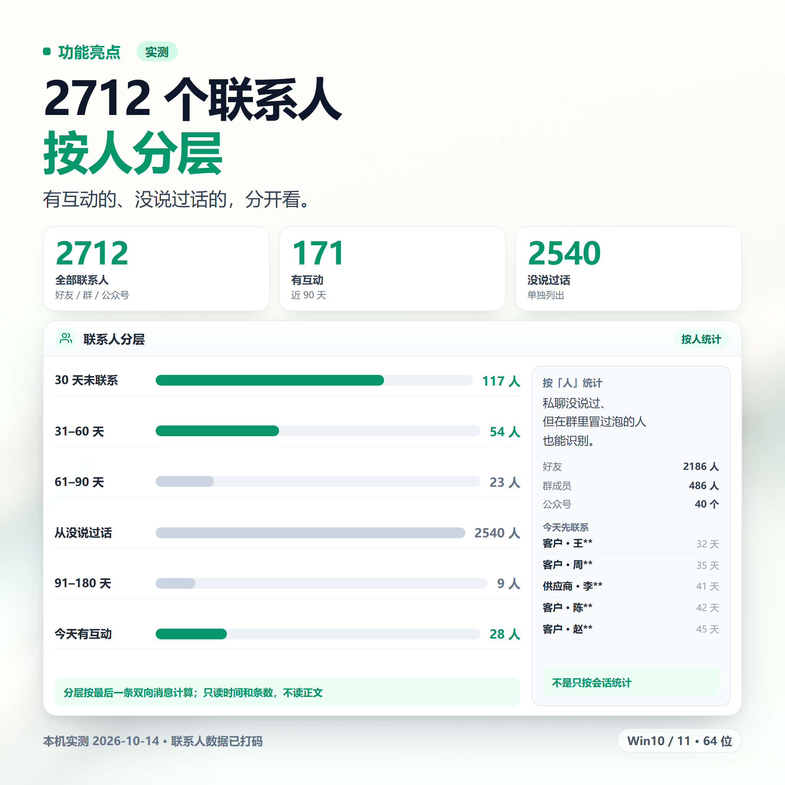
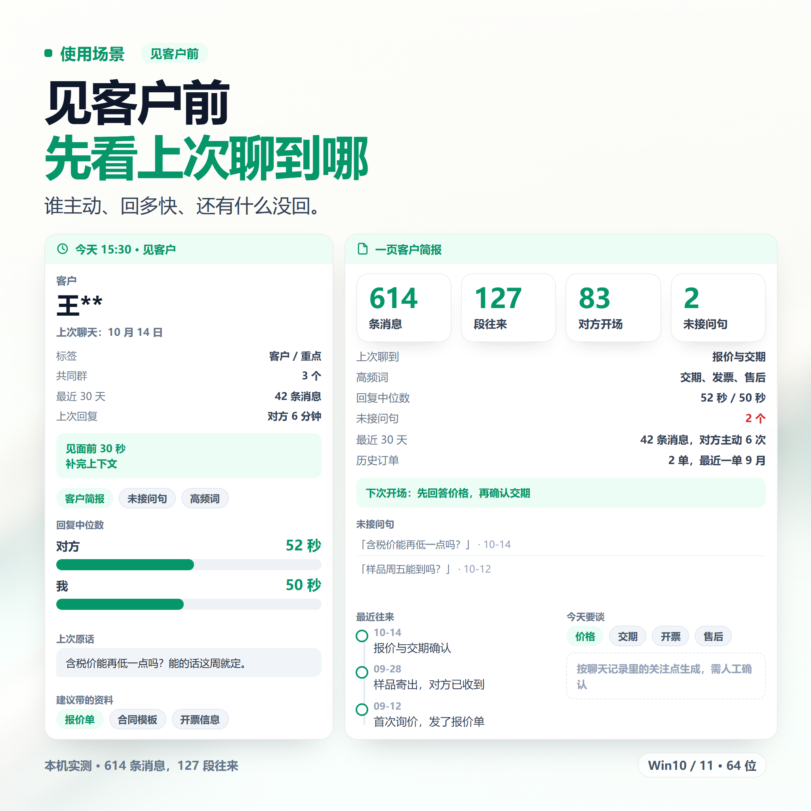
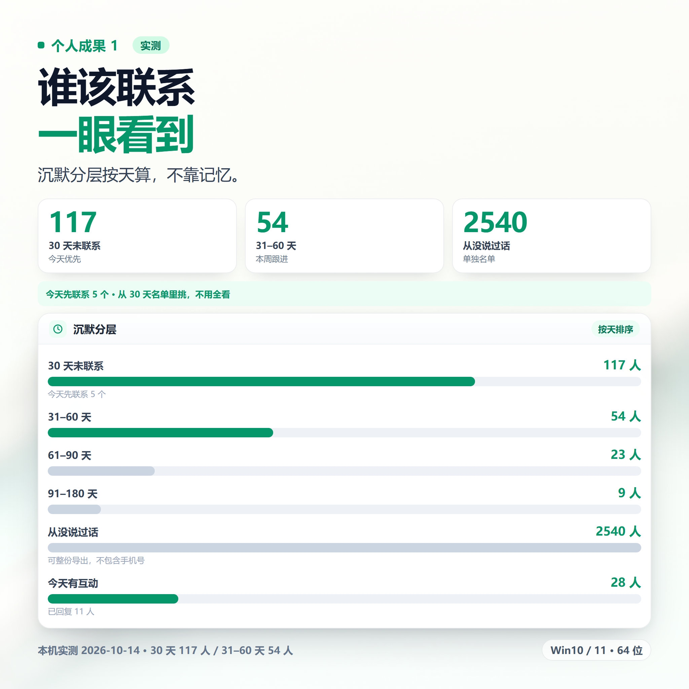
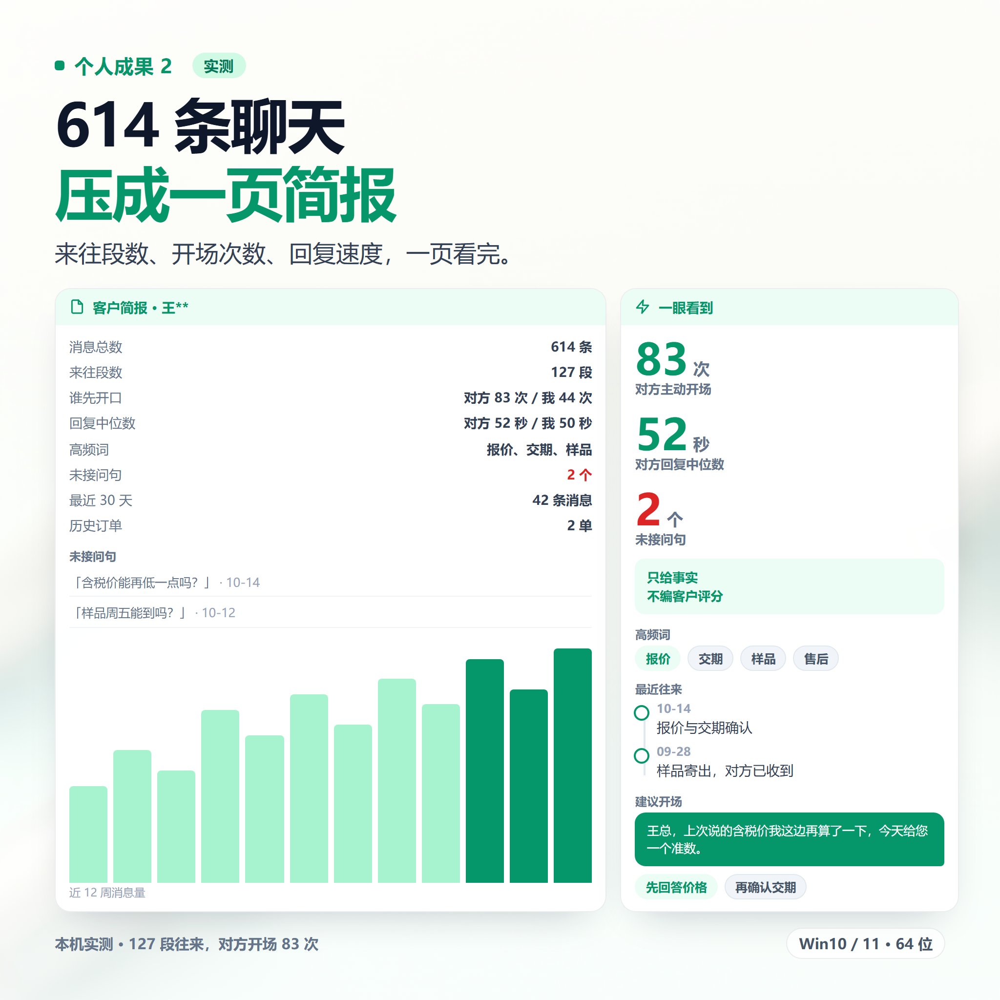
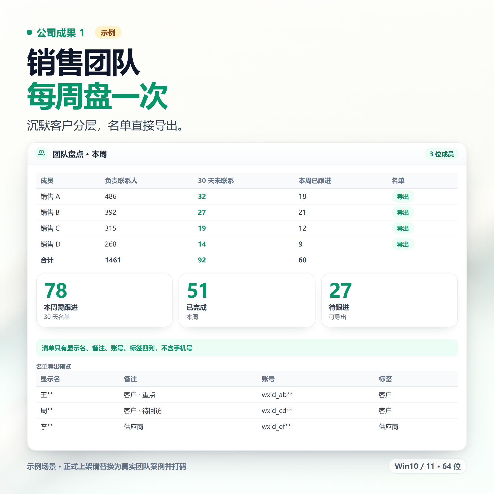
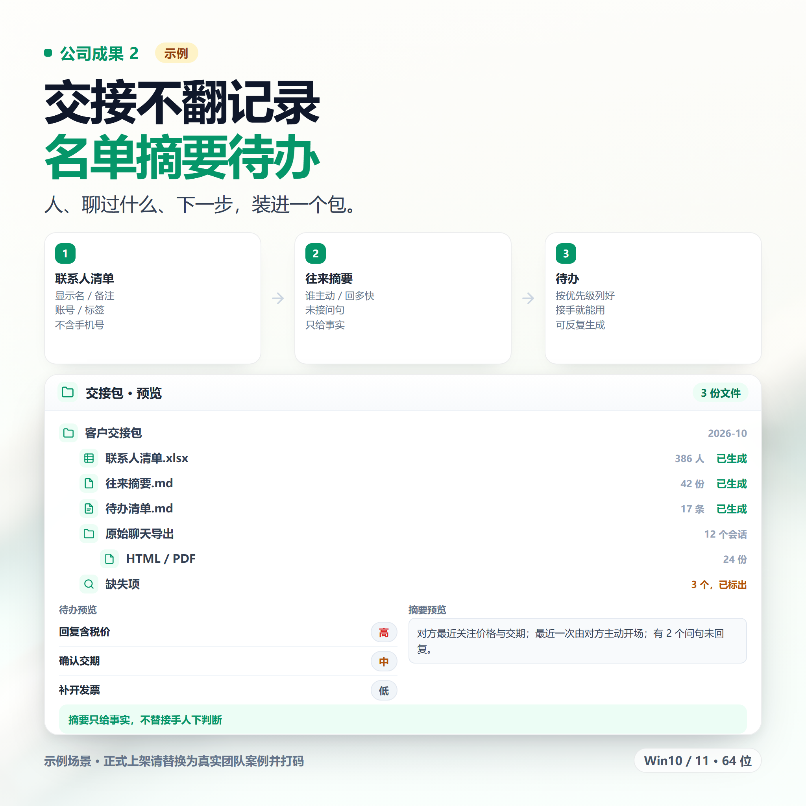

1标题（30 字内，三选一）
WX人脉联系人整理 沉默分层 群成员清单 可导表格
备选：
WX联系人清单整理 久未联系分层 可导Excel
VX人脉盘点 客户简报 互动统计 标签筛选 送教程
2商品描述（直接复制）
【核心功能】 · 联系人清单：好友、群、公众号、企业号分类；群成员含群内称呼 · 标签筛选：读取你在 WX 里打的标签，按标签列人 · 沉默分层：30/60/90 天未联系；从没说过话的人单独列出 · 互动排行：按会话统计条数、活跃时段、沉默天数 · 客户简报：来往段数、谁先开口、双方回复中位数、高频词、未接问句 · 组合搜索：会话 × 时间段 × 关键词 · 导出表格：显示名、备注、账号、标签，可整份导 Excel 【适用场景】 销售跟进、私域运营、自由职业人脉盘点、换工作交接、按标签整理名单、见客户前快速回顾。 【优势】 · 按「人」统计，不只看会话；私聊没说过、但群里冒过泡的人也能识别 · 通讯录面只看时间和条数，不读正文 · 只给事实和数字，不编客户评分 · 与互动排行同一套数据，数字对得上 【定制服务】 群接龙转订单表、承诺/待办追踪、客户看板、跟进话术建议、离职交接包。 【发货与安装】 闲鱼聊天窗口发安装包和图文教程。Win10/11 64 位，WX 电脑版需登录并运行。 【拍前须知】 · 只读，不改不删 · 表格只有显示名、备注、账号、标签四列 · 只做本人自用，不接营销类需求 · 虚拟商品，发货后不退不换
3标签
WX人脉联系人整理人脉跟进
沉默分层Excel表格效率工具
4图片方案（三类 6 张）
前两张讲功能亮点和使用场景，中间两张放个人成果，最后两张放公司/团队成果。6 张图已生成到 images/contact-organizer/，可直接上传；个人和公司成果是演示示例，正式上架建议换成真实截图并打码。






图里不要拼「客户名单 / 手机号 / 一键导出」这类字，容易被判成数据倒卖。公司成果两张必须换成真实案例。
图片底图由 ComfyUI 生成，界面和数据用 HTML 排版后导出；文件 2048×2048，平台上传会自动压缩。
5拍前问答话术
| 买家问 | 这样回 |
|---|---|
| 会读我的聊天内容吗？ | 整理名单只看时间和条数，不读正文；看摘要和搜索只在你提问时读，只在本机处理。 |
| 表格里有手机号吗？ | 没有。只有显示名、备注、账号、分组。 |
| 能按标签筛人吗？ | 可以，读的是你自己在软件里打的分组，只读不改。 |
| 能自动提醒我吗？ | 工具本身不主动推送，可以在 AI 助手里设定时任务，定期跑一次。 |
| 能批量加好友吗？ | 不能，也不提供这类功能。 |
| 手机能用吗？ | 不行，只支持 Windows 电脑端。 |
6本款容易踩的词
| 不要写 | 换成 |
|---|---|
| 微信全称 / 微信号 / 加微信 | WX、VX |
| 客户资料 / 客户名单 / 通讯录数据 | 人脉、联系人清单 |
| 抓取 / 采集 / 爬 / 监控 | 整理、盘点 |
| 手机号 / 批量导出 / 一键加人 | 不写。明确说明不含手机号 |
| 自动跟进 / 自动回复 / 营销 | 不写 |
| 精准客户 / 获客 / 引流 | 不写 |
7内部备注（不要发给买家）
这款的核心是「按人统计」，不是「按会话统计」。「从没说过话的人也能单独列出来」是最能打动买家的点，其他工具做不到。
面向销售的话，讲「见客户前先看一眼上次聊到哪」；不要讲「帮你找客户」——后者直接踩红线。
定制需求（接龙转订单、承诺追踪）只在私聊里谈，别写进商品页。
面向销售的话，讲「见客户前先看一眼上次聊到哪」；不要讲「帮你找客户」——后者直接踩红线。
定制需求（接龙转订单、承诺追踪）只在私聊里谈，别写进商品页。